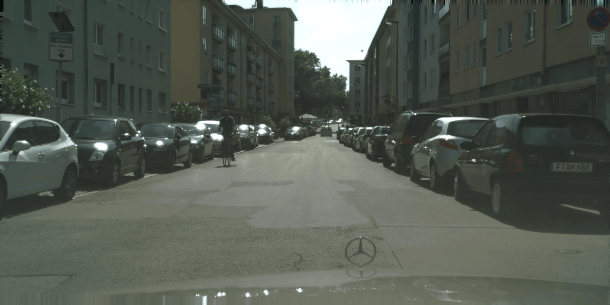
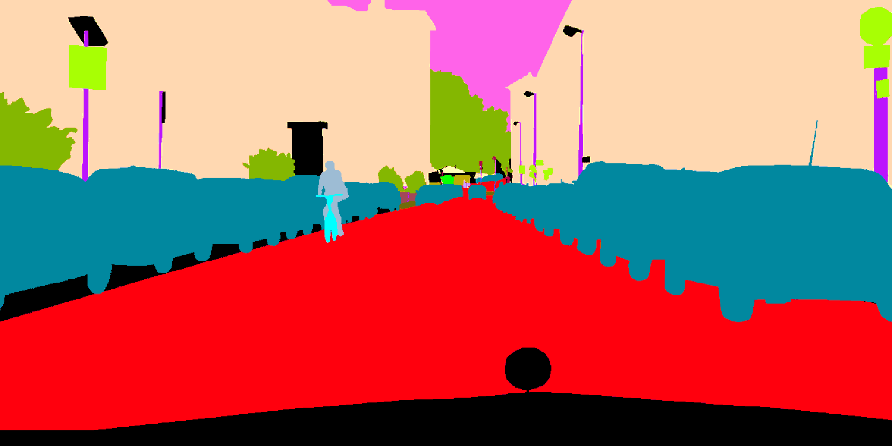
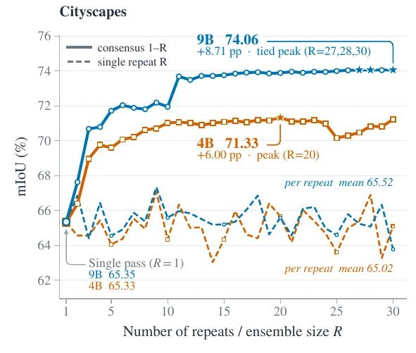

TL;DR
Turn an image generator into a
general-purpose perception model.
Open Vision Banana fine-tunes open-weight FLUX.2 Klein 4B and 9B Base image generators on public data. The same model generates an RGB image for segmentation or geometry, then a deterministic decoder reads out the prediction. No task-specific prediction heads or losses are added.
2open base model sizes
6perception tasks
163released checkpoints
The unified interface
Perception, expressed as image generation.
One model, multiple tasks. Explore inputs and predictions from the paper, including image editing retained after perception training.
Task instruction · summarized
Paint the requested Cityscapes classes with their assigned colors.
OVB image generator
Readout
nearest prompted color → class label
Decoded semantic mask
Hover to reveal input

Measured performance
A shared model for six perception tasks.
OVB takes on segmentation, relative depth, and surface normals with a shared model.
How does OVB compare?
OVB's non-zero-shot Cityscapes score exceeds the reported zero-shot scores of Vision Banana and SAM 3. Training and inference setups differ across methods.
| Task & benchmark | Open Vision Banana | Vision Banana | Selected specialists |
|---|---|---|---|
| Semantic segmentation Cityscapes val · mIoU ↑ | 75.79B · non-zero-shot · 20-pass vote 69.7 mean single pass | 69.9 | SAM 3 65.2 |
| Referring segmentation RefCOCOg val (UMD) · cIoU ↑ | 69.29B · non-zero-shot Original expressions | 73.8 | SAM 3 + Gemini 2.5 Pro 73.4HybridGL 51.3 |
| Reasoning segmentation ReasonSeg val · gIoU ↑ | 74.64B · non-zero-shot + Gemma4 31B | 79.3+ Gemini 2.5 Pro | SAM 3 + Gemini 2.5 Pro 77.0SegZero-Qwen2.5-VL-7B 62.6 |
| Instance segmentation SA-Co/Gold · cgF1 ↑ | 40.19B · non-zero-shot · 11-pass consensus + Qwen3-VL-30B-A3B presence gate | 47.5+ Gemini 3.1 Flash-Lite | OWLv2 24.6DINO-X 21.3 |
| Relative depth NYUv2 · δ₁ (%) ↑ | 99.09B · non-zero-shot Per-image disparity-affine alignment | 94.8Metric depth | Marigold V2 98.0Lotus-2 97.6 |
| Surface normals NYUv2 · mean error (°) ↓ | 13.214B · non-zero-shot Camera-space normals | 17.8 | Marigold V2 16.6Lotus-2 16.9DSINE 16.4 |
A central finding
Test-Time Scaling for Vision Models
The model often finds the right regions but assigns the wrong colors. Repeating predictions with different color legends and voting on the decoded labels improves accuracy without additional training.
-
Change the color legend
Request the same categories with different color assignments.
Pass 1RoadCarPass 2RoadCar -
Predict and decode
The same OVB model generates each image. Decode colors into common class labels.
PurpleRoadPass 1YellowRoadPass 2 -
Vote on the labels
For each pixel, keep the category selected by the most decoded predictions.
RoadRoadCarMajorityRoad
Cityscapes · 9B · zero-shot65.4 → 74.06mIoU, first pass → peak vote (27, 28, or 30 passes)
COCO-Object · 9B · non-zero-shot44.9 → 59.3mIoU, first pass → 90-pass vote

The gain comes from correcting color binding.
Voting improves label accuracy while region quality stays nearly unchanged. On COCO-Object, wrong-class foreground pixels fall from 19.0% to 10.3% over 90 passes.
WHAT MAKES THE RECIPE WORK
Designing Generative Perception Models
Three takeaways from studying target encoding, training data, and model adaptation.
RGB interface
How labels map to colors matters.
Training with a fixed color legend yields 54.3 mIoU on Cityscapes, but only 7.1 when the colors change. Randomized assignments teach the model to follow the prompt.
Multi-task recipe
Balance performance across tasks.
More data or longer training can help one task while hurting another. The final recipe balances segmentation, geometry, and retained generative abilities.
Model adaptation
Adapt more of the backbone.
Tuning only the last few transformer blocks performs poorly. Strong perception requires adapting a substantial fraction of the backbone.

Open by construction
A recipe others can inspect, reproduce, and extend.
Built with public base models and datasets. We release training and evaluation code alongside model weights, including intermediate and ablation checkpoints.
Citation
Using Open Vision Banana?
Please cite OVB if you use it in your work.
@misc{jadon2026openvisionbanana,
title = {Open Vision Banana: A Fully Open Recipe for Generative Visual Perception},
author = {Jadon, Arpit and Pariza, Valentinos and Ruthardt, Jona and
Yamada, Ryousuke and Koepke, A. Sophia and Bursuc, Andrei and Asano, Yuki M.},
year = {2026},
eprint = {2611.15844},
archivePrefix = {arXiv},
primaryClass = {cs.CV},
url = {https://arxiv.org/abs/2611.15844}
}